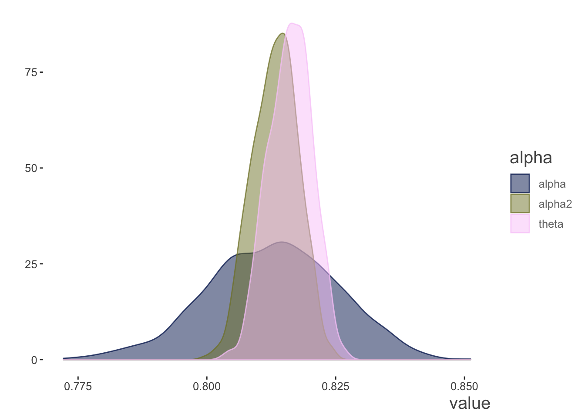
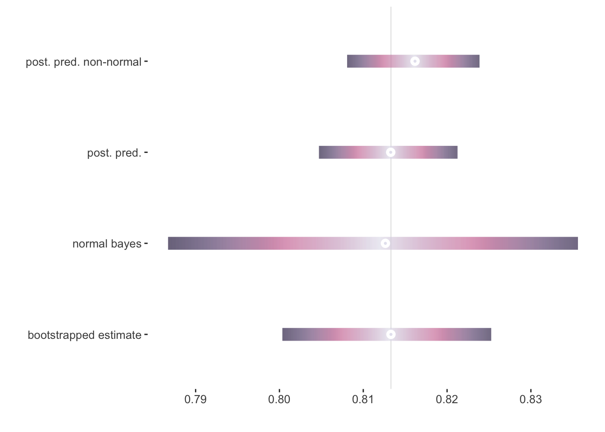

Demonstrations
Preliminaries
Before diving into demonstration we will first describe the data and analytical approach. Both observed and simulated data will be presented, followed by discussion of the analysis.
Data Description
Observed Data
The Big Five Inventory is a popular personality scale use in a wide variety of applications. For our example, we will have at our disposal 25 items corresponding to the five subscales- Agreeableness, Openness, Extroversion, Conscientiousness, and Neuroticism. However, we will concern ourselves with the Neurtocism subscale specifically. This particular data is available in the R package psych, and regards 2800 subjects as part of the Synthetic Aperture Personality Assessment (SAPA) web based personality assessment project. The items are six-point scales ranging from 1 Very Inaccurate to six 6 Very Accurate, and are statements that may reflect the person’s assessment of themselves. The neuroticism items in particular are:
- N1: Get angry easily.
- N2: Get irritated easily.
- N3: Have frequent mood swings.
- N4: Often feel blue.
- N5: Panic easily.
More details can be found with the data object’s (bfi) associated helpfile. The following shows how the data may be obtained.
library(tidyverse)
library(psych)##
## Attaching package: 'psych'## The following object is masked from 'package:visibly':
##
## bfi## The following objects are masked from 'package:ggplot2':
##
## %+%, alphaneuroticism = select(bfi, N1:N5)Basic descriptives and correlations are shown next. While there is some missing data, some reliability statistics will be based on pairwise correlations, and thus use all available information. Some of the item correlations are not that strong, but this is a realistic situation for many data in social and related sciences.
neuroticism %>%
tidyext::describe_all_num() %>%
select(-Min, -Max, -Q1, -Q3) %>%
kable_df()| Variable | N | Mean | SD | Median | Missing |
|---|---|---|---|---|---|
| N1 | 2778 | 2.93 | 1.57 | 3 | 22 |
| N2 | 2779 | 3.51 | 1.53 | 4 | 21 |
| N3 | 2789 | 3.22 | 1.60 | 3 | 11 |
| N4 | 2764 | 3.19 | 1.57 | 3 | 36 |
| N5 | 2771 | 2.97 | 1.62 | 3 | 29 |
# visibly::corr_heat(cor(neuroticism, use = 'pair'), pal = 'acton', dir=1)
cor(neuroticism, use = 'pair') %>%
kable_df(digits=2)| N1 | N2 | N3 | N4 | N5 | |
|---|---|---|---|---|---|
| N1 | 1.00 | 0.71 | 0.56 | 0.40 | 0.38 |
| N2 | 0.71 | 1.00 | 0.55 | 0.39 | 0.35 |
| N3 | 0.56 | 0.55 | 1.00 | 0.52 | 0.43 |
| N4 | 0.40 | 0.39 | 0.52 | 1.00 | 0.40 |
| N5 | 0.38 | 0.35 | 0.43 | 0.40 | 1.00 |
Simulated/Ideal data
One of our investigations into reliability will involve what is commonly referred to as factor analysis. Along with the observed data just described, the psych package additionally provides an easy means to simulate data with known factor structure. We can specify the number of factors, loadings, number of items among other things. Doing so will allow us to know what to expect from the factor analysis portion of the exploration, and explore uni- vs. multidimensional structure if desired. As a starting point, we will simulate a congeneric data set, one in which the factor structure regards just one latent variable underlying the items. We will have six items for this data, with moderate to strong loadings between .4 and .7.
set.seed(123)
N = 1000
n_items = 6
loadings_congeneric = c(.4, .4, .5, .5, .6, .7)
cor_congeneric = sim.congeneric(loadings_congeneric, N = N)
data_congeneric =
mvtnorm::rmvnorm(n = N,
mean = rep(0, n_items),
sigma = cor_congeneric) %>%
as_data_frame() %>%
rename_all(str_replace, pattern = 'V', replacement = 'item_')data_congeneric %>%
as_data_frame() %>%
head() %>%
kable_df()| item_1 | item_2 | item_3 | item_4 | item_5 | item_6 |
|---|---|---|---|---|---|
| -1.158 | 0.592 | 2.019 | 0.797 | 1.869 | 0.329 |
| -0.038 | 1.193 | 0.635 | 0.845 | 0.108 | 0.213 |
| 0.398 | 0.211 | 0.828 | -0.138 | -0.534 | 1.333 |
| -0.712 | 0.194 | -1.546 | -0.551 | 1.944 | 0.084 |
| 0.839 | 0.521 | -1.203 | 0.798 | -0.822 | 0.606 |
| -1.098 | -0.047 | 0.429 | -0.356 | -0.116 | 0.364 |
Analytical Approach
The analysis of the data will be conducted on both the observed and simulated data sets. We will show three conceptual estimates of reliability, but, in addition, we will focus on the estimated uncertainty in those estimates. Far too often reliability statistics are reported without any thought of the underlying models, or that there is possibly notable uncertainty in the estimate. The three conceptual estimates include the most popular estimate of reliability, Cronbach’s \(\alpha\), followed by two model-based approaches - generalizability theory and latent variable/factor analysis.
Cronbach’s \(\alpha\)
Cronbach’s \(\alpha\) is one of the most popular measures of reliability. Sometimes considered an measure of internal consistency, it is a function of the average covariance/correlation among the observations/items, the total variance of the test, as well as the number of items. It is also interpreted as the mean of all possible spit-half reliabilities. While it is descriptive in nature, it assumes a unidimensional factor structure model representation, or in other words, that all the items correspond to the same underlying construct1. The standardized formula only requires the two values of the number of items \(k\) and average inter-item correlation \(\bar{r}\).
\[\alpha = \frac{k\bar{r}}{1+(k-1)\bar{r}}\]
All else being equal, simply increasing the number of observations/items will give you a higher reliability. In some contexts this may make sense, as the goal is to use an average score, but in others it may not.
The following shows the results from the psych package. In addition to both raw and standardized \(\alpha\) measures, it also offers Guttman’s lambda 6, a ‘signal-to-noise’ ratio and tohre info. Shown are the alphas, absolute standard error, and average/median inter-item correlation.
# psych::alpha(neuroticism) %>% print(digits=3)
alpha_results = psych::alpha(neuroticism)
alpha_results %>%
magrittr::extract2('total') %>%
as_data_frame() %>%
rename(`Raw` = raw_alpha,
Standardized = std.alpha,
G6 = `G6(smc)`,
`Avg. Inter-item cor` = average_r,
ASE = ase,
`Median r` = median_r) %>%
select(Raw, Standardized, `Avg. Inter-item cor`, `Median r`, ASE) %>%
kable_df(digits = 2)| Raw | Standardized | Avg. Inter-item cor | Median r | ASE | |
|---|---|---|---|---|---|
| 0.81 | 0.81 | 0.47 | 0.41 | 0.01 |
These statistics show how \(\alpha\) changes when the item is dropped. We can see that items N1 through N3 are more useful measures, as dropping them would result in a significant drop in \(\alpha\).
alpha_results %>%
magrittr::extract2('alpha.drop') %>%
as_data_frame() %>%
rename(`Raw` = raw_alpha,
Standardized = std.alpha,
G6 = `G6(smc)`,
`Avg. Inter-item cor` = average_r,
`Median r` = med.r,
`Variance r` = var.r) %>%
select(Raw, Standardized, `Avg. Inter-item cor`, `Median r`) %>%
kable_df(digits = 2, caption = 'Reliability if the item is dropped.')| Raw | Standardized | Avg. Inter-item cor | Median r | |
|---|---|---|---|---|
| N1 | 0.76 | 0.76 | 0.44 | 0.41 |
| N2 | 0.76 | 0.76 | 0.45 | 0.41 |
| N3 | 0.76 | 0.76 | 0.44 | 0.39 |
| N4 | 0.80 | 0.80 | 0.50 | 0.49 |
| N5 | 0.81 | 0.81 | 0.52 | 0.53 |
neuro_fem = neuroticism %>% filter(bfi$gender==1)
neuro_male = neuroticism %>% filter(bfi$gender==2)
neuro_fem_alpha = psych::alpha(neuro_fem)$total$std.alpha
neuro_male_alpha = psych::alpha(neuro_male)$total$std.alpha
alpha.ci(neuro_fem_alpha,
n.obs = nrow(neuro_fem),
n.var = ncol(neuro_fem)) %>%
rbind(alpha.ci(neuro_male_alpha,
n.obs = nrow(neuro_male),
n.var = ncol(neuro_male)) )The Uncertainty of \(\alpha\)
One issue with Cronbach’s \(\alpha\) is that the uncertainty in the estimate is almost never reported, even though it has been known for decades how to derive a confidence interval for it, and tools are readily available for producing it. The package does this in two ways. One uses an approach noted in @feldt_statistical_1987, and which assumes fixed, rather than random, items and subjects. The other method is via the bootstrap, calculating \(\alpha\) for \(R\) number of bootstrap resamples of the data. Both results are shown below, with the bootstrapped value based on 1000 iterations.
set.seed(123)
# note that the non-boot ci output is only generated as part of the print method
# for generic psych, and then cat(!), so there is no actual access to it.
alpha_ci = data_frame(LL = alpha_results$total$raw_alpha - 1.96 * alpha_results$total$ase,
alpha = alpha_results$total$raw_alpha,
UL = alpha_results$total$raw_alpha + 1.96 * alpha_results$total$ase)
alpha_boot_ci = alpha(neuroticism, n.iter = 1000)$boot.ci %>%
t() %>%
data.frame() %>%
rename(LL = X2.5.,
alpha = X50.,
UL = X97.5.)
alpha_ci %>%
bind_rows(alpha_boot_ci) %>%
mutate(` ` = c('alpha raw', 'alpha boot')) %>%
select(` `, LL, alpha, UL) %>%
kable_df(digits = 4)| LL | alpha | UL | |
|---|---|---|---|
| alpha raw | 0.8030 | 0.8140 | 0.8250 |
| alpha boot | 0.8022 | 0.8139 | 0.8255 |
We can see that the bootstrapped interval is essentially the same, but in either case we can see that our estimate of \(\alpha\) would best be summarized as some value between .80 and .83.
A Bayesian Approach
An alternative approach to estimating the uncertainty in \(\alpha\) would be a Bayesian estimate. We could estimate the value by first estimating the correlation matrix underlying the assumed multivariate normal distribution of the observations/items. Thus the Bayesian \(\alpha\) would be based on the posterior predictive distribution given the estimate of the correlation matrix @padilla_estimating_2011. Alternatively, we could use a normal approximation for the distribution of the \(\alpha\) itself, based on the estimated correlation matrix @van_zyl_distribution_2000. Yet another approach would be based on a mixed model, calculating an intra-class correlation coefficent for a set number of items, as in Generalizability theory. We will save that for the following section. More detail can be found in the supplemental materials.
library(rstan); library(tidybayes)## Loading required package: StanHeaders## rstan (Version 2.18.2, GitRev: 2e1f913d3ca3)## For execution on a local, multicore CPU with excess RAM we recommend calling
## options(mc.cores = parallel::detectCores()).
## To avoid recompilation of unchanged Stan programs, we recommend calling
## rstan_options(auto_write = TRUE)##
## Attaching package: 'rstan'## The following object is masked from 'package:psych':
##
## lookup## The following object is masked from 'package:tidyr':
##
## extract## NOTE: As of tidybayes version 1.0, several functions, arguments, and output column names
## have undergone significant name changes in order to adopt a unified naming scheme.
## See help('tidybayes-deprecated') for more information.neuroticism_no_na = na.omit(scale(neuroticism))
data_list = list(X=neuroticism_no_na,
N=nrow(neuroticism_no_na),
p=ncol(neuroticism_no_na),
scale_flag = 0)
alpha_bayes = stan(file = 'code/alpha.stan', data = data_list, cores = 4, thin = 4)alpha_draws = spread_draws(alpha_bayes, alpha, alpha2, theta)
alpha_bayes_ci =
alpha_draws %>%
tidybayes::mean_qi() %>%
select(-.width, -.point, -.interval) %>%
tidyext::gather_multi(key = value,
values = vars(`Normal approx.`, `Post. Pred`, `Post. Pred. Non-normal`),
varlist = vars(c(alpha, alpha.lower, alpha.upper), starts_with('alpha2'), starts_with('theta')))
alpha_bayes_ci = as_data_frame(t(alpha_bayes_ci[,-1])) %>%
mutate(` ` = c('Normal approx.', 'Post. Pred', 'Post. Pred. Non-normal')) %>%
select(` `, everything()) %>%
rename(alpha = V1,
LL = V2,
UL = V3) %>%
select(` `, LL, alpha, UL)
alpha_bayes_ci %>%
kable_df()| LL | alpha | UL | |
|---|---|---|---|
| Normal approx. | 0.789 | 0.814 | 0.838 |
| Post. Pred | 0.805 | 0.814 | 0.822 |
| Post. Pred. Non-normal | 0.809 | 0.817 | 0.825 |
We can also view these estimates directly. The normal approximation is wider than the other two.
alpha_draws %>%
gather(key=alpha, value=value, -.chain, -.iteration, -.draw) %>%
qplot(x=value, geom = 'density', data=.,
fill = alpha,
color = alpha) +
scico::scale_fill_scico_d(alpha = .5) +
scico::scale_color_scico_d(alpha = .75) +
theme_trueMinimal()
Here are all the estimates of uncertainty calculated. For this amount of data it is not surprising that they are mostly in agreement, though the normal approximation may be a little wider.
alpha_ci %>%
bind_rows(alpha_boot_ci) %>%
mutate(` ` = c('alpha raw', 'alpha boot')) %>%
select(` `, LL, alpha, UL) %>%
bind_rows(alpha_bayes_ci) %>%
kable_df(digits = 2)| LL | alpha | UL | |
|---|---|---|---|
| alpha raw | 0.80 | 0.81 | 0.82 |
| alpha boot | 0.80 | 0.81 | 0.83 |
| Normal approx. | 0.79 | 0.81 | 0.84 |
| Post. Pred | 0.81 | 0.81 | 0.82 |
| Post. Pred. Non-normal | 0.81 | 0.82 | 0.82 |
res = alpha_ci %>%
bind_rows(alpha_boot_ci) %>%
mutate(` ` = c('raw', 'boot')) %>%
select(` `, LL, alpha, UL) %>%
bind_rows(alpha_bayes_ci) %>%
rename(Coefficient = ` `,
value = alpha,
ui_l = LL,
ui_u = UL)
visibly:::plot_coefs(res,
palette = 'acton',
ref_line = alpha_ci$alpha,
trans = NULL) +
labs(y='')
Simulated Data
The simulated data allows for us to have a more controlled exploration. We know the items are multivariate normal and unidimensional, so this is where \(\alpha\) shines as a measure of reliability. We’ll skip the formality and cut right to the chase. Here are all the previous estimates for this data set. The \(\alpha\) is
alpha_results = psych::alpha(data_congeneric)
alpha_ci = data_frame(LL = alpha_results$total$raw_alpha - 1.96 * alpha_results$total$ase,
alpha = alpha_results$total$raw_alpha,
UL = alpha_results$total$raw_alpha + 1.96 * alpha_results$total$ase)
alpha_boot_ci = alpha(data_congeneric, n.iter = 1000)$boot.ci %>%
t() %>%
data.frame() %>%
rename(LL = X2.5.,
alpha = X50.,
UL = X97.5.)
data_list = list(X=data_congeneric,
N=nrow(data_congeneric),
p=ncol(data_congeneric),
scale_flag = 0)
alpha_bayes = stan(file = 'code/alpha.stan', data = data_list, cores = 4, thin = 4)alpha_draws = spread_draws(alpha_bayes, alpha, alpha2, theta)
alpha_bayes_ci =
alpha_draws %>%
tidybayes::mean_qi() %>%
select(-.width, -.point, -.interval) %>%
tidyext::gather_multi(key = value,
values = vars(`Normal approx.`, `Post. Pred`, `Post. Pred. Non-normal`),
varlist = vars(c(alpha, alpha.lower, alpha.upper), starts_with('alpha2'), starts_with('theta')))
alpha_bayes_ci = as_data_frame(t(alpha_bayes_ci[,-1])) %>%
mutate(` ` = c('Normal approx.', 'Post. Pred', 'Post. Pred. Non-normal')) %>%
select(` `, everything()) %>%
rename(alpha = V1,
LL = V2,
UL = V3) %>%
select(` `, LL, alpha, UL)
alpha_compare = alpha_ci %>%
bind_rows(alpha_boot_ci) %>%
mutate(` ` = c('alpha raw', 'alpha boot')) %>%
select(` `, LL, alpha, UL) %>%
bind_rows(alpha_bayes_ci)
alpha_compare %>% kable_df(digits = 2)| LL | alpha | UL | |
|---|---|---|---|
| alpha raw | 0.69 | 0.72 | 0.75 |
| alpha boot | 0.69 | 0.72 | 0.74 |
| Normal approx. | 0.67 | 0.72 | 0.77 |
| Post. Pred | 0.69 | 0.72 | 0.74 |
| Post. Pred. Non-normal | 0.71 | 0.73 | 0.75 |
res = alpha_compare %>%
rename(Coefficient = ` `,
value = alpha,
ui_l = LL,
ui_u = UL)
visibly:::plot_coefs(res,
palette = 'bilbao',
ref_line = alpha_ci$alpha,
trans = NULL) +
labs(y='')
Generalizability theory
\[\rho = \frac{\sigma_g^2}{\sigma_g^2 + \sigma^2}\]
# alpha as icc/generalizability statistic from g-theory
library(rstanarm)
mixed_congeneric_bayes = stan_lmer(value ~ (1|subject), d_congeneric_long_std, cores=4, thin=4)
VarCorr(mixed_congeneric_bayes)
# note that Sigma is var intercept, while sigma is residual sd
var_comp_draws = spread_draws(mixed_congeneric_bayes, Sigma[subject:(Intercept),(Intercept)], sigma) %>%
mutate(sigma = sigma^2,
alpha = Sigma/(Sigma + sigma/N_items))
# var_comp_draws %>% mean_qi(alpha)
print(alpha_bayes, par='alpha', digits=4)The Uncertainty of Generalizability
Simulated Data
Factor Analysis
omega, ave
The Uncertainty of Factor Loadings
Despite this, you will see it frequently reported in cases of multidimensional factor structure.↩